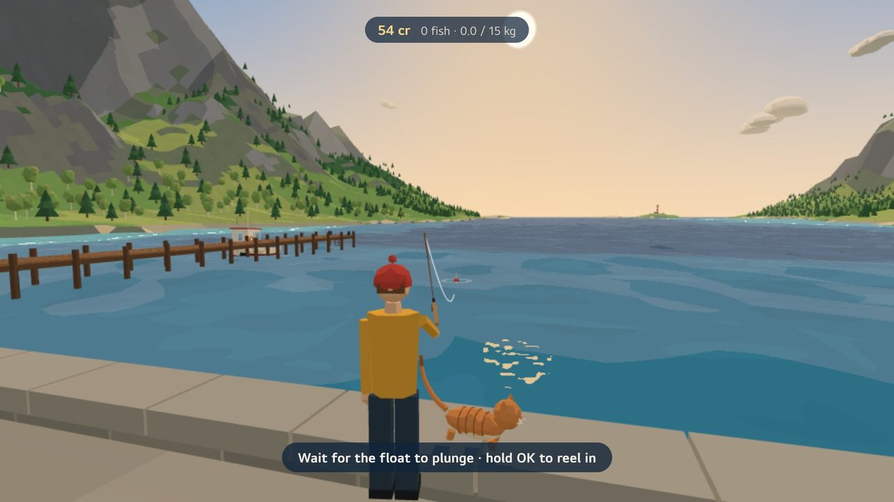
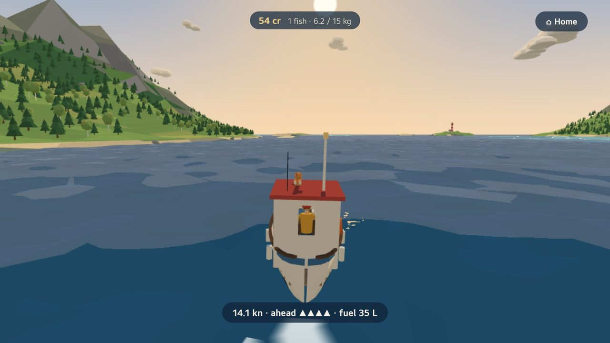
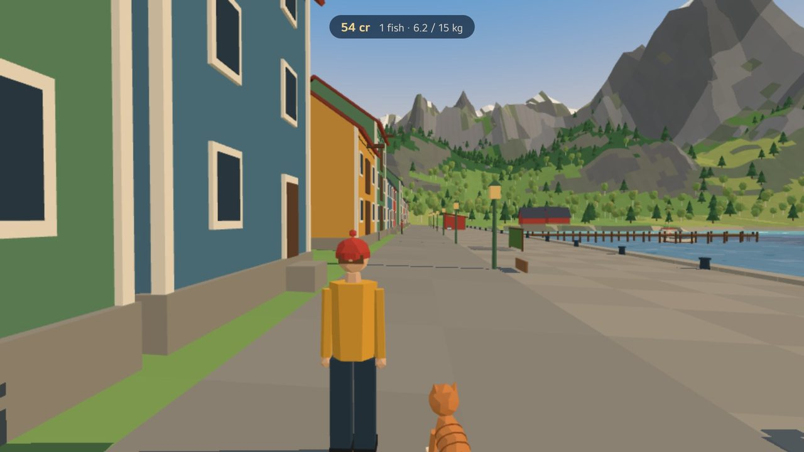
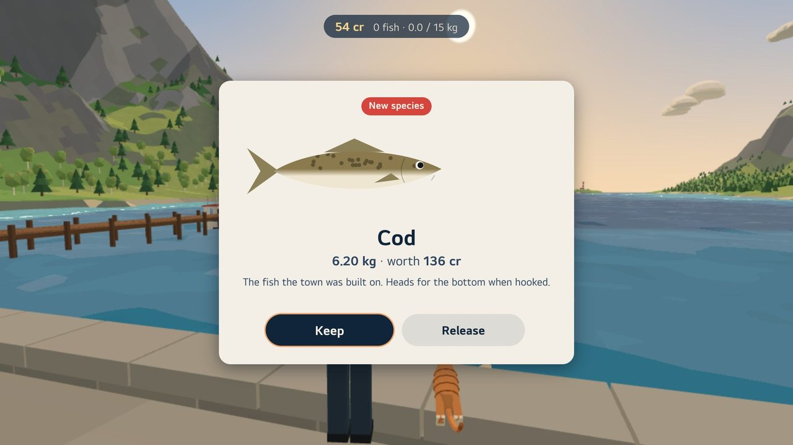

Grandfather has left you his rod and his boat in Codhaven, a harbour town of painted wooden houses at the head of a quiet northern fjord. Cast from the quay, the pier or the beaches, fight cod, pollock and mackerel with your remote, sell your catch at the fish stall, and take the boat out to the lighthouse.




Get it
Codhaven is free, from the LG Content Store, for LG TVs with webOS 22 (2022) or newer. It needs no internet connection, has no adverts and no purchases.
How to play
| Remote | Does |
|---|---|
| ▲ ▼ ◀ ▶ | Walk and turn. With the Magic Remote, point it to look around. |
| Hold OK, let go | Cast, facing the water. Or swing the Magic Remote: the faster the swing, the further the cast. |
| OK | Strike when the float plunges (small dips are only nibbles). Also: talk to people, go aboard, pat your pet. |
| Hold OK | Reel in. Let go when the fish runs and the line is close to breaking. |
| ◀ ▶ in a fight | Lean against a sideways run. |
| BACK | Close a panel, or open the pause menu (journal, bait, settings, and ⌂ Home when you're out in the boat). |
Questions
Where is my progress saved? Only on your TV. Removing the app removes it. To start again, choose Settings, then "Start again from the beginning".
The picture stutters on my TV. In Settings, set Picture to Fast.
Does it collect any data? No. See the privacy page.
Contact
Questions, problems or ideas: codhaven@sunnyinternational.info
Please say which TV model you have (Settings, then Support, on the TV) and what happened.